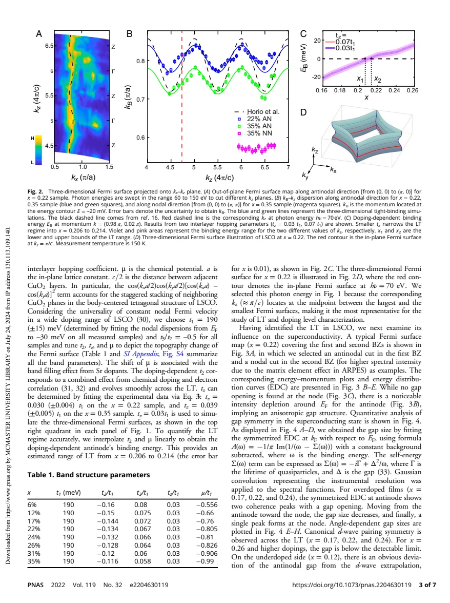
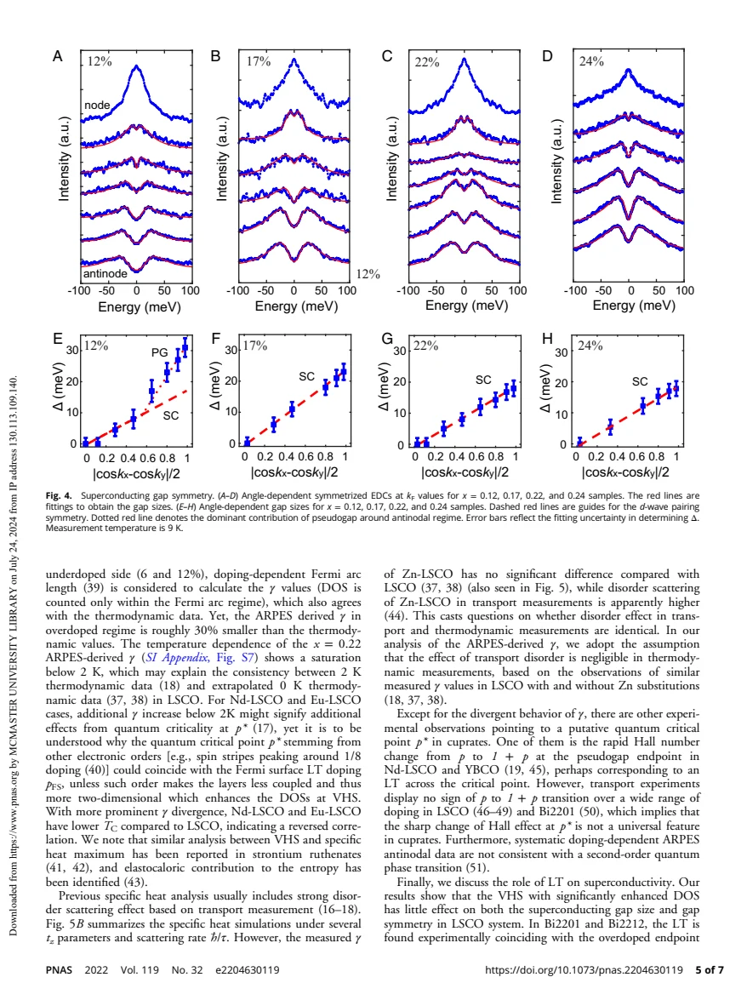
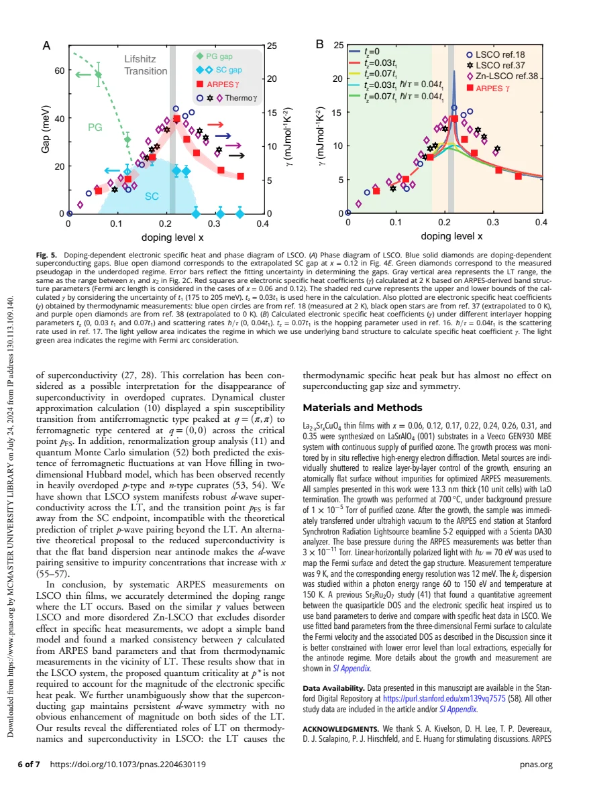

experiment · Zhong · supplied source 2022
Differentiated roles of Lifshitz transition on thermodynamics and superconductivity in La2-xSrxCuO4
ARPES-derived three-dimensional bands account for much of the LSCO specific-heat maximum near a Lifshitz transition, while the d-wave gap evolves smoothly through it.
The question: Does a Fermi-surface topology change explain the thermodynamic peak and enhance superconductivity?
Before you start: the few terms you need
- Fermi contour: constant-energy states at the chemical potential
- Lifshitz transition: a change in Fermi-surface topology
- Electronic density of states connects quasiparticle bands to entropy
See → explain → test
Understand it in four pictures.
Picture 1 / 4
Cross a saddle point
Look for: Crossing a saddle point changes the connectivity of a Fermi contour.
Swipe across the picture to read every label, or enlarge it below.
Teaching schematic. The renderer uses a square-lattice toy band t = 1, t′ = −0.2 and two chemical potentials about its saddle; these are not the source’s fitted LSCO bands.
Topology can change without a broken-symmetry order parameter.
Picture 2 / 4
Resolve the third direction
Look for: Photon-energy scans reveal antinodal kz dispersion but little nodal dispersion.
Swipe across the picture to read every label, or enlarge it below.
- Change photon energy
- Probe different kz
- Fit interlayer hopping
- Bound transition range
Teaching schematic. Momentum conversion and inner potential are model assumptions.
Finite interlayer hopping broadens a two-dimensional singular point into a range.
Picture 3 / 4
Calculate the thermal consequence
Look for: Spectroscopic band parameters yield DOS and entropy, then C/T.
Swipe across the picture to read every label, or enlarge it below.
- Measured dispersion
- Calculate DOS
- Calculate entropy
- Compare C/T
Teaching schematic. This is a constrained quasiparticle model, not an independent direct calorimetry measurement.
A band contribution can mimic a peak otherwise attributed to quantum criticality.
Picture 4 / 4
Compare gap with heat peak
Look for: The gap remains d-wave and has no special magnitude enhancement near the transition.
Swipe across the picture to read every label, or enlarge it below.
- Normal-state γ
- Superconducting gap
Teaching schematic. Gap and γ are different observables; no artificial common-axis curves are drawn.
A DOS maximum does not automatically maximize pairing.
Predict before revealing
If a band saddle enhances γ but Δ evolves smoothly, what follows?
Choose an answer, then compare the reasoning.
A quasiparticle DOS enhancement affects entropy directly. Pairing also depends on interactions, coherence and disorder; the result is material-specific.
Read the answer
Thermodynamics and pairing can respond differently to topology A quasiparticle DOS enhancement affects entropy directly. Pairing also depends on interactions, coherence and disorder; the result is material-specific.
Go deeper Follow the full argument
Two questions about the same topology change
Zhong and colleagues measure LSCO thin films from x approximately 0.06 to 0.35 using in-situ-connected growth and ARPES. A Lifshitz transition occurs when the chemical potential crosses an antinodal saddle point and the large Fermi surface changes from hole-like to electron-like. This can enhance DOS without requiring symmetry breaking. The paper asks separately whether that enhancement accounts for a normal-state electronic heat-capacity peak and whether it controls superconducting gap size or symmetry. These questions need not have the same answer. The analysis concerns LSCO, and does not remove the possibility of different contributions in Nd- or Eu-substituted systems.
Why kz and doping calibration matter
The films are about 13.3 nm thick, grown on LaSrAlO4, and transferred under vacuum for spectroscopy. Fermi-surface and gap measurements use 70 eV photons at 9 K; photon-energy scans from 60 to 150 eV at 150 K map out-of-plane dispersion. Doping in the analysis is determined by the Fermi-surface Luttinger count, not simply assumed from nominal shutters or Sr composition. A free-electron-like final-state conversion with inner potential about 9 eV relates photon energy to kz. The strong antinodal but small nodal kz modulation constrains interlayer hopping. A benchmark x = 0.22 single crystal agrees in Fermi volume and interlayer hopping, supporting comparison with bulk thermodynamic data without proving every film and bulk property identical.
The band model and the finite transition interval
A three-dimensional tight-binding form includes first-, second- and third-neighbor in-plane hopping and a stacking-dependent interlayer term. The nodal velocity motivates t1 = 190 ± 15 meV and t3/t2 = −0.5; t2 and chemical potential vary with doping. Fitted tz is about 0.030t1 at x = 0.22 and 0.039t1 at x = 0.35. Using tz = 0.03t1 and interpolation, the source estimates the topology change between x = 0.206 and 0.214, with doping uncertainty about 0.01. Different kz slices can have different contour topology in that interval. The decimal bounds should therefore not be treated as exact universal doping endpoints. Correlation-renormalized spectroscopic bands are used, rather than an unmodified free-electron model.
Thermodynamic agreement and its qualifications
The calculated DOS enters the Fermi entropy, whose derivative gives electronic C/T. Finite three-dimensionality turns the ideal two-dimensional van Hove divergence into a finite sharp peak. Updated small tz and doping-dependent in-plane parameters reproduce the location and much of the magnitude of the measured LSCO γ maximum near x = 0.21. At low doping, an arc restriction is added; farther overdoped, calculated γ is about 30 percent below thermodynamic values. The model neglects the transport-derived disorder broadening in its primary comparison, motivated by similar thermodynamic γ with and without Zn despite different resistivities. This is a substantive assumption: transport scattering and thermodynamic DOS need not have identical disorder sensitivity. The fit argues that a dominant extra quantum-critical contribution is not needed for this LSCO peak; it does not prove all quantum fluctuations absent.
Why superconductivity behaves differently
Symmetrized spectra are fitted with a gap self-energy and instrumental convolution. At x = 0.17, 0.22 and 0.24, gap size follows the d-wave momentum form across the topology transition, with no special enhancement near the DOS maximum. At x = 0.12 the antinodal gap exceeds a nodal d-wave extrapolation, consistent with a distinct pseudogap contribution. For x at least 0.26 the gap lies below the experiment’s detectable limit; that is a resolution statement, not automatically proof of exactly zero gap. The result challenges a simple van-Hove-enhanced pairing explanation in this material. The online supporting information, including detailed growth and uncertainty checks, is referenced but is not part of the supplied seven-page PDF. Keep those absent details separate from the directly read main article.
How to compare the evidence
The toy contour and the measured doping sequence must be distinguished. In a conventional electron-band picture, increasing chemical potential fills more electron states; adding holes runs in the opposite direction. The schematic compares the two sides of a saddle without using its left-to-right direction as a calibrated doping axis. In the source, actual Fermi volumes and photon-energy-dependent dispersion constrain the LSCO doping and interlayer parameters. The thermodynamic calculation then uses those renormalized bands, rather than inferring a divergence from an ideal two-dimensional cartoon. Its primary success is explaining much of a finite heat-capacity peak, with remaining overdoped discrepancy and disorder assumptions stated. The gap comparison supplies an independent response: a peak in accessible states does not automatically increase the superconducting interaction or gap.
Translate the mathematics Key equations and symbol meanings
γ = Cel/T = ∂S/∂T
Symbols: γ: Sommerfeld-type coefficient; Cel: electronic heat capacity; S: electronic entropy.
The entropy is computed from a quasiparticle DOS; the comparison is model dependent.
S = −kB ∫ [f ln f + (1−f) ln(1−f)] ρ(E) dE
Symbols: f: Fermi occupation; ρ(E): electronic DOS; kB: Boltzmann constant.
States within a thermal window near EF contribute to entropy; an enhanced DOS can increase γ without stronger pairing.
Δ(k) ∝ |cos(kxa) − cos(kya)|/2
Symbols: Δ: gap magnitude; kx, ky: momenta; a: in-plane lattice constant.
The tested d-wave angular dependence persists on both sides of the Lifshitz range in the measured superconducting films.
Read the evidence A guided look at the original figures

Open the full original page ↗

Open the full original page ↗

Open the full original page ↗
What this paper does—and does not—establish
- Supporting information and deposited raw data are not included in the supplied PDF and were not read.
- Thermodynamic comparison assumes a quasiparticle band DOS and negligible transport-like disorder broadening.
- Finite resolution and doping uncertainty bound the gap and transition claims.
Explain it back.
Try answering aloud before opening the explanation.
Why is the transition a doping interval?
Different kz slices cross the saddle at different fillings because interlayer dispersion is finite.
Is x simply the nominal Sr content here?
The analysis uses a Luttinger count from the measured Fermi surface as its doping calibration.
Does this rule out quantum criticality everywhere?
No. It provides a band explanation for much of the LSCO heat peak and explicitly leaves other materials and residual contributions open.
Connect the next paper.
Source version, reading coverage and preservation
Complete supplied substantive text read; selected main figure and equation pages rendered and visually checked
Reviewed body pages: 1, 2, 3, 4, 5, 6. The online SI Appendix, raw repository data and cited external papers were not included in the supplied seven-page PDF and were not independently read.
Original file retained byte for byte. SHA-256: 584fa9a3d505090c733b23282b1b43fb369be1b4ab3dc2c7d9efaa1c40590045
Filename: PNAS - Zhong - Lifshitz transition thermodynamics and superconductivity in LSCO - 2022.pdf.